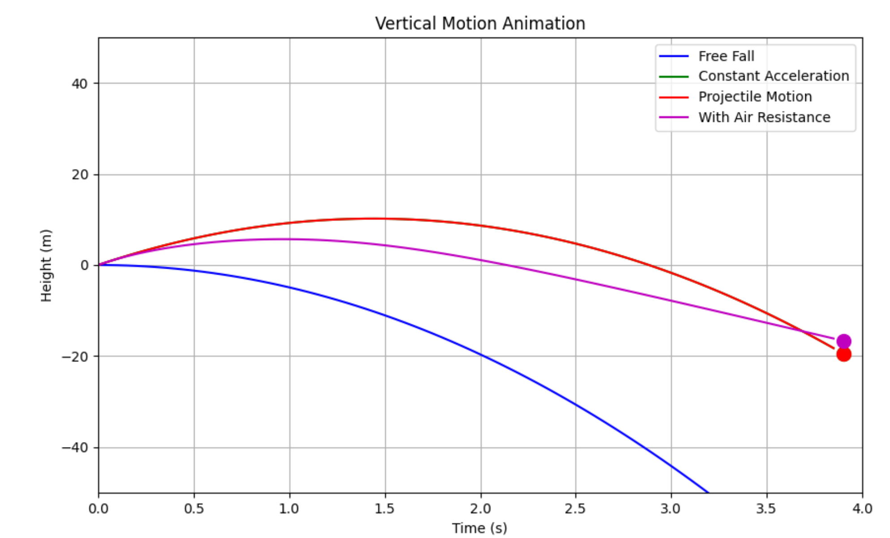
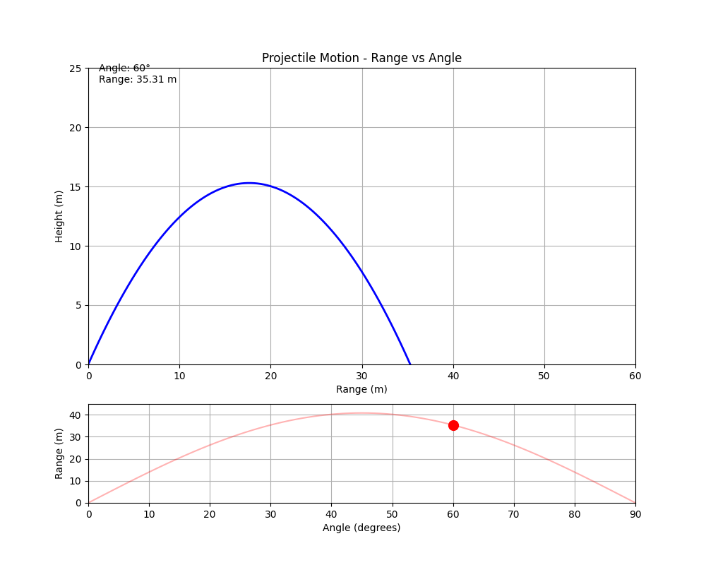

Problem 1
Investigating the Range as a Function of the Angle of Projection
Deriving the Governing Equations of Motion
Projectile motion can be described by breaking the motion into horizontal and vertical components, governed by Newton's laws and the influence of gravity.
Horizontal Motion:
In the absence of horizontal forces (air resistance is neglected), the horizontal velocity remains constant:
From this formula we could express horizontal position as a function of time:
Here are some differential equations for horizontal motion:
-
Constant Velocity:
$$ \frac{d^2 x}{dt^2} = 0 $$
-
Motion with Constant Acceleration:
$$ \frac{d^2 x}{dt^2} = a $$
-
Motion with Air Resistance (Proportional to Velocity):
$$ m \frac{d^2 x}{dt^2} = -k \frac{dx}{dt} $$
-
Projectile Motion (Horizontal Component):
$$ \frac{d^2 x}{dt^2} = 0 $$
Vertical motion:
The vertical velocity is affected by gravity:
$$ {\large v_y(t)=v_0 \sin(\theta)-gt} $$
The vertical position is:
Here are some differential equations for vertical motion:
-
Free Fall (No Air Resistance):
$$ \frac{d^2 y}{dt^2} = -g $$
-
Motion with Constant Acceleration (Upward or Downward):
$$ \frac{d^2 y}{dt^2} = a $$
-
Motion with Air Resistance (Proportional to the Square of Velocity):
$$ m \frac{d^2 y}{dt^2} = -mg - k \left( \frac{dy}{dt} \right)^2 $$
-
Projectile Motion (Vertical Component):
$$ \frac{d^2 y}{dt^2} = -g $$
 Animation
Analasys of the range:
Dependence of Range on Angle of Projection
The range (\(R\)) of a projectile is the total horizontal distance it covers before returning to the initial vertical level. Using kinematic equations and assuming air resistance is negligible, the range is given by:
From this equation, we observe that:
- The range depends on the sine of twice the launch angle \(2\theta\).
- It reaches its maximum value when \(\sin(2\theta) = 1\), which occurs at \(\theta = 45^\circ\).
- At 0° and 90°, \(\sin(2\theta) = 0\), resulting in no horizontal range.
 Animation
Impact of Other Parameters on the Range
1. Effect of Initial Velocity (\(v_0\))
- The range is proportional to the square of the initial velocity (\(v_0^2\)).
- Increasing \(v_0\) leads to a significantly larger range, while decreasing \(v_0\) reduces the distance traveled.
- Example: Doubling \(v_0\) results in a fourfold increase in range.
2. Influence of Gravitational Acceleration (\(g\))
- Since \(g\) appears in the denominator, a higher gravitational acceleration results in a shorter range.
- In environments with lower gravity (e.g., the Moon), the projectile travels much farther.
- Example: The same projectile launched on Earth and on the Moon (where \(g_{\text{Moon}} \approx \frac{1}{6} g_{\text{Earth}}\)) would cover six times the range on the Moon.
Real life examples:
Projectile motion isn’t just physics—it’s the hidden MVP in real-world feats:
- Sports: Basketballers nail arcs, golfers tweak spin—athletes turn balls into projectile art.
- Military: Artillery and snipers master trajectories for deadly precision.
- Engineering: Parabolic bridges, roller coasters, and demolition paths owe their curves to projectile math.
- Space: Rockets soar and Mars landers touch down via calculated arcs.
- Entertainment: Movie stunts and game physics pop with projectile-powered realism.
From hoops to Hollywood, it’s the science behind the spectacle. What’s your favorite example?